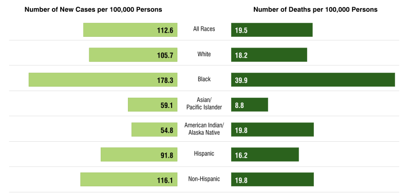

DCCPS Response and Contribution to the Cancer Moonshot
This Overview and Highlights features examples of the DCCPS response to the Blue Ribbon Panel’s recommendations, including the following opportunities and initiatives made possible through Cancer Moonshot funding authorized under the 21st Century Cures Act. In addition to these priorities, the division continues to invest in research across the cancer control continuum. Most of the grants DCCPS funds are investigator initiated, not in response to a specific funding opportunity announcement. Potential grant applicants are encouraged to contact one of our program directors, whose contact information can be found on our website.
For each Cancer Moonshot priority, we include examples of DCCPS-led funding announcements and activities that illustrate some ways in which the division is addressing each area.
As part of a much larger undertaking, DCCPS is just one contributor of many working to realize the goals of the Cancer Moonshot. Under the leadership of Drs. Doug Lowy and Dinah Singer, NCI rapidly established a systematic process for implementing the Moonshot Blue Ribbon Panel (BRP) Report’s recommendations. NCI staff led the effort to operationalize those recommendations, forming working groups and using a variety of mechanisms to develop funding opportunities aligned with each recommendation.
To promote and enhance data-sharing, all reports resulting from Cancer Moonshot activities are required to adhere to an open-access policy of immediate data release upon publication. NCI has also developed new partnerships with other government agencies, the private sector, and the international research community to further the goals of the Cancer Moonshot in general and the BRP recommendations in particular.
Network for Direct
Patient Engagement
Patient Engagement for Priority Cancer Sequencing
The Blue Ribbon Panel notes the importance of directly engaging with patients to facilitate participation in research and to ensure patients are respected and have access to the research enterprise. The goal of this initiative is to demonstrate the potential utility of direct patient engagement to complement existing infrastructures and traditional approaches to engaging patients in research. Through this Request for Applications (RFA), NCI will fund targeted direct patient engagement projects, with a focus on underrepresented populations, to generate a comprehensive genomic landscape of cancers that are poorly characterized, to address research gaps and NCI priority areas.
Portal to Support Patient Engagement Projects
The goal of this contract is to develop a master patient gateway portal that will provide a single point of entry for the existing Cancer Moonshot engagement efforts, as well as any future engagement projects funded by NCI. By providing a single point of entry, the patient gateway will amplify communication across NCI engagement efforts. The initial modular infrastructure to support study-specific portals will be driven by the requirements of the Moonshot Biobank and Rare Tumor Patient Engagement Network (RTPEN), but will be extendable and customizable to meet the needs of future communities. This project is a collaboration between the Data Ecosystem and Network for Direct Patient Engagement teams, and DCCPS played a critical role in developing and refining this concept.
A National Cancer Data Ecosystem
for Sharing and Analysis
Establishing Data Linkages: Unique Encrypted Patient Identifiers from Claims and EMRs
NCI’s Surveillance Research Program (SRP) is undertaking steps to enhance Surveillance, Epidemiology, and End Results (SEER) Program data as a research resource. In September 2017, SRP utilized Cancer Moonshot funds to sponsor a workshop with insurance companies to inform the direction of linkages between claims data and SEER data. The goals of this effort are to create a data science infrastructure that connects, collects, and shares a broad array of large data sets to enable patients, clinicians, and researchers to contribute and analyze data—facilitating discovery that will improve patient care and outcomes. To accomplish this goal, the SEER Program is expanding population-based linkage of claims from multiple insurers, focusing on efficiency (a standardized format from all health care providers, ANSI 837), accuracy, and collection of data that are historically beneficial (SEER Medicare 65+).
SEER Partnership with the US Department of Energy
A key area of the enhancement of SEER is focused on electronic medical record (EMR) data integration. The SEER Program is partnering with Department of Energy (DOE) scientists, using Cancer Moonshot funding, to develop tools that will allow SEER to collect the data elements it has traditionally captured (e.g., cancer type and grade), as well as new data elements (e.g., biomarkers, recurrences) from patient data, including pathology reports. Compared with the manual collection that is often used now, automated data collection would be far more reliable and rapid, even if some cases still require manual coding.
Symptom Management
Research
Improving Management of symPtoms Across Cancer Treatments (IMPACT)
Currently, there are major barriers to effective symptom control among cancer patients, and a lack of systematic efforts to translate research into practice. The Blue Ribbon Panel therefore emphasizes the need to gather and monitor patient-reported symptoms and to provide decision support and care using evidence-based symptom management guidelines. This RFA encouraged the development of scalable, transferrable, and sustainable models for monitoring and addressing symptoms in routine practice, with multiple research centers expanding the breadth of models tested. The RFA supported the development of a research consortium, with the goal to produce findings and materials for wider implementation. Three research centers and one coordinating center have been awarded. The research centers are responsible for the deployment and evaluation of the symptom assessment and management system using implementation science approaches, while the coordinating center provides oversight and management of collaborative activities within the consortium.
Prevention and Early Detection:
Implementation of Evidence-based Approaches
Cancer Center Cessation Initiative
Continued smoking after a cancer diagnosis can interfere with treatment and worsen a patient’s prognosis, while quitting can help improve patients’ symptoms and their ability to recover more quickly from treatment, in addition to improving their long-term outcomes. Using Cancer Moonshot funds, the initiative provided resources in FY17 and FY18 to 42 NCI-Designated Cancer Centers to expand existing efforts intended to help their patients who are smokers to stop smoking. Centers will endeavor to identify and offer evidence-based cessation treatment to all cancer patients who smoke. They are also required to sustain these interventions for a minimum of 3 years after the funding ends. Ultimately, the goal is to more fully integrate cessation interventions into routine patient care at cancer centers, so that helping cancer patients who smoke to quit becomes the standard of care in cancer treatment.
Accelerating Colorectal Cancer Screening and follow-up through Implementation Science (ACCSIS)
There is suboptimal uptake of evidence-based cancer prevention and screening programs, particularly among underserved populations. The purpose of this funding opportunity announcement is to promote research in colorectal cancer screening, follow-up, and referral-to-care among target populations for whom screening rates are below national standards. The goal of the ACCSIS program is to provide a robust evidence base for multilevel interventions that increase rates of colorectal cancer screening, follow-up, and referral-to-care, and best practices for how multilevel interventions can be scaled-up to reduce the burden of colorectal cancer on the United States population. Currently, three research grants and one coordinating center have been awarded, and the RFA has been reissued, with another round of funding planned for fiscal year (FY) 2019.
Accelerated Control of Cervical Cancer
Control of human papillomavirus (HPV)-related cancers and cancer health disparities were specifically identified as high-priority areas in the recommendations of the Blue Ribbon Panel. This proposal is focused on accelerating research in cervical cancer screening, with implications for the United States – where cervical cancer is a health disparity for African-American, American Indian, and Hispanic women, and poor women generally – and globally. The goal is to control cervical cancer by combining new screening tools and simplified vaccination strategies across settings with varying resource levels. Therefore, the initiative promotes extramural research focused on both underserved, low-resource settings in the United States, as well as improving implementation of new risk-based screening and prevention strategies in high-resource settings.
Implementation Science for Cancer Control
For many years, health researchers may have assumed that tools and interventions deemed efficacious within clinical or community-based trials would be readily adopted and implemented; however, compelling evidence suggests that this has not been the case. This funding opportunity announcement encourages investigators to submit research grant applications that will identify, develop, test, evaluate and/or refine strategies to disseminate and implement evidence-based practices (e.g., behavioral interventions; prevention, early detection, diagnostic, treatment, and disease management interventions; quality improvement programs) into public health, clinical practice, and community settings. In addition, studies to advance dissemination and implementation research methods and measures are encouraged. Funding is planned for FY19.
Cancer Prevention and Early Detection:
Inherited Cancer Syndromes
Approaches to Identify and Care for Individuals with Inherited Cancer Syndromes
Despite the availability of genetic testing and counseling, a substantial number of those at risk for cancer are not identified and thus may not benefit from available prevention and early-detection approaches. The purpose of this funding opportunity announcement is to increase case ascertainment and appropriate follow-up care, optimizing the delivery of evidence-based health care for individuals at high risk of cancer due to an inherited genetic susceptibility. One grant was funded in FY18, and the RFA has been reissued for FY19 funding.
Communication and Decision Making in the Context of Risk and Uncertainty for Individuals with Inherited Cancer Syndromes
One of the most challenging tasks confronting an individual with an inherited cancer syndrome is understanding his or her risk of disease and applying this understanding to decisions involving disease risk management and disclosure of genetic test results to family members. The purpose of this funding opportunity announcement is to develop, test, and evaluate interventions and implementation approaches, or adapt existing approaches, to improve patient/provider/family risk communication and decision making for individuals and families with an inherited susceptibility to cancer. This initiative will be funded in FY19.
Health
Disparities
Research on Prostate Cancer in Men of African Ancestry:
Defining the Roles of Genetics, Tumor Markers, and Social Stress (RESPOND)
African-American men are more likely to be diagnosed with prostate cancer than non-Hispanic white men, they are more likely to be diagnosed with aggressive disease, and they are more likely to die from prostate cancer than men in other racial and ethnic groups. In FY18, NCI provided support, using Cancer Moonshot funding, for RESPOND—the largest coordinated research effort to study biological and non-biological factors associated with aggressive prostate cancer in African-American men. The study is investigating social, environmental, and genetic factors related to aggressiveness of prostate cancer in African-American men to better understand why they disproportionally experience aggressive disease compared with men of other racial and ethnic groups. RESPOND is also supported by the National Institute on Minority Health and Health Disparities and the Prostate Cancer Foundation.
Prostate Cancer by Race/Ethnicity
U.S. 2011–2015, Age Adjusted
Improving Smoking Cessation in Socioeconomically Disadvantaged Populations via Scalable Interventions
Comprehensive tobacco control efforts have produced several decades of steady declines in smoking prevalence in the general US population; however, this progress has not occurred equally across socioeconomic strata. This funding opportunity announcement is intended to stimulate research efforts aimed at the development of smoking cessation interventions that are targeted to socioeconomically disadvantaged populations and could be made scalable for broad population impact. Applicants may propose projects that develop and test novel cessation interventions with the potential to be scaled up, as well as projects that focus on enhancing the effectiveness, quality, accessibility, utilization, and cost-effectiveness of currently scaled smoking cessation interventions.
Dissemination of a Colorectal Cancer Screening Program Across American Indian Communities in the Southern Plains and Southwest United States
Cancer screening programs are partly responsible for declining colorectal cancer incidence and mortality in the United States. Unfortunately, American Indians have experienced either no change or an increase in colorectal cancer incidence and mortality, disproportionate diagnosis of late-stage disease, and poorer survival. Despite the effectiveness of colorectal cancer screening tests for average-risk adults, these tests are significantly underutilized by American Indians. This project supports research on system-level changes and culturally appropriate media that promote any USPSTF-approved colorectal screening test. In consultation with local tribes (such as Navajo, Southwest Pueblos, and Chickasaw), the research teams—made up of cancer centers in Arizona, New Mexico, and Oklahoma, local tribes, and epidemiology centers—will set up data sharing and ownership guidelines and agreements, with the ultimate goal of closing the gap in colorectal cancer outcomes between the American Indian population and the general US population.
Cancer Survivorship
Improving Outcomes for Pediatric, Adolescent and Young Adult Cancer Survivors
DCCPS has issued a funding opportunity announcement to efficiently implement major elements of the STAR Act by funding multiple intervention research project grants beginning in FY19. This Cancer Moonshot research funding announcement (RFA) focuses on stimulating the scientific development of effective, feasible, and scalable interventions to address biomedical, behavioral, and psychosocial adverse effects in survivors of pediatric/AYA cancers. The RFA requests applications from investigators to address the areas of research outlined in the STAR Act by proposing intervention studies to improve health care delivery or to prevent or mitigate adverse effects in pediatric/AYA cancer survivors. The development of interventions to address health disparities and the needs and preferences of minority or other medically underserved populations will be of high priority in all research areas.
Optimizing Management and Outcomes for Cancer Survivors Transitioning to Follow-up Care
This Cancer Moonshot RFA, which will be funded in FY20, is designed to stimulate interventional research aimed at enhancing communication, engagement, and coordination between oncology specialists and providers not involved in active cancer treatment, in order to optimize follow-up care for cancer survivors. It is expected that the ability to care for the growing number of survivors will be advanced by demonstrating how other types of care providers can be engaged in coordinated survivorship care, thereby conserving scarce specialized resources for those in need of more intense, cancer-focused care. Accordingly, this RFA has the potential to change the face of cancer survivorship care.